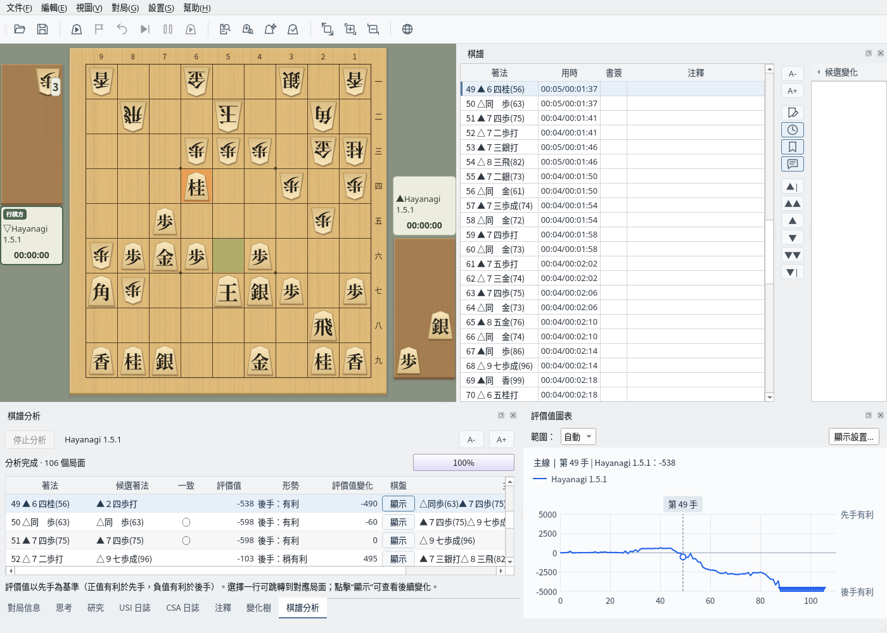
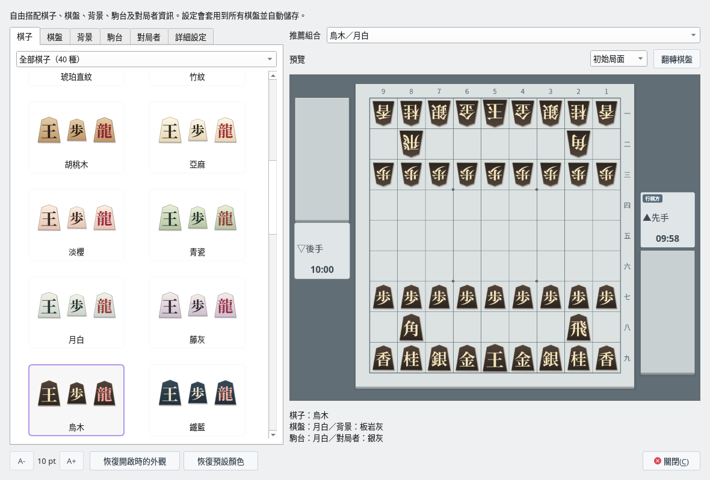

研究與分析
研究與分析
候選著法化為箭頭，
形勢變化一目了然
註冊 USI 引擎後，即可在研究模式中分析任意局面，或一次分析整盤棋譜。透過評價值圖表與分析結果列表，能迅速找出形勢轉變的那一手。
- 候選著法以附編號的箭頭顯示，打入的著法從駒台延伸而出
- 棋譜分析逐手列出評價值、是否與最佳著法一致以及評價值變化
- 對局中也能以箭頭查看引擎的最佳著法；引擎對引擎時可同時顯示雙方的思考
- 透過變化樹、書籤與註解整理研究內容


從研究、外觀與詰棋三個情境，介紹 ShogiBoardQ 的使用體驗。
 研究與分析
研究與分析
註冊 USI 引擎後，即可在研究模式中分析任意局面，或一次分析整盤棋譜。透過評價值圖表與分析結果列表，能迅速找出形勢轉變的那一手。

 外觀
外觀
透過「檢視」→「對局外觀…」，可從樣本中分別選擇棋子、棋盤、背景、駒台與對局者資訊，並在預覽中確認整體效果。

 詰棋
詰棋
發行套件收錄 3、5、7、9、11、13 手詰各 1,000 道。從題目列表選題，由內建引擎 Hayanagi 擔任守方，在棋盤上將死對方的玉。
使用指南依用途介紹所有功能的用法。
 對局、研究與分析需要註冊支援 USI 協定的將棋引擎。各作業系統的發行套件中都附有將棋引擎 Hayanagi。在此向各位將棋引擎開發者致上謝意。
對局、研究與分析需要註冊支援 USI 協定的將棋引擎。各作業系統的發行套件中都附有將棋引擎 Hayanagi。在此向各位將棋引擎開發者致上謝意。
可從 GitHub 發行頁面取得最新版本，免費使用。
64 位元 Windows（x64）
ShogiBoardQ.exe搭載 Apple 晶片的 Mac
ShogiBoardQ.app 拖曳到「應用程式」資料夾x86_64（AppImage）
ShogiBoardQ-linux-x86_64.AppImage 加上執行權限後執行各套件皆附有詰棋題集（6,000 道）與將棋引擎 Hayanagi（含定跡檔案）。系統需求與更新內容請參閱發行說明（日文）。
取得含子模組的儲存庫後，即可使用 Qt 6 與 CMake 建置。各作業系統的步驟請參閱建置指南（macOS 為英文）。
ShogiBoardQ 是依據 GNU 通用公眾授權條款第 3 版（GPL-3.0）發布的自由軟體。
授權條款全文請參閱 LICENSE 檔案。